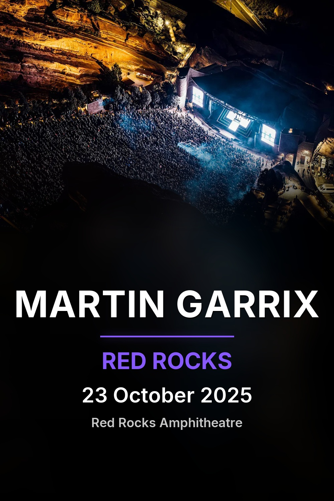
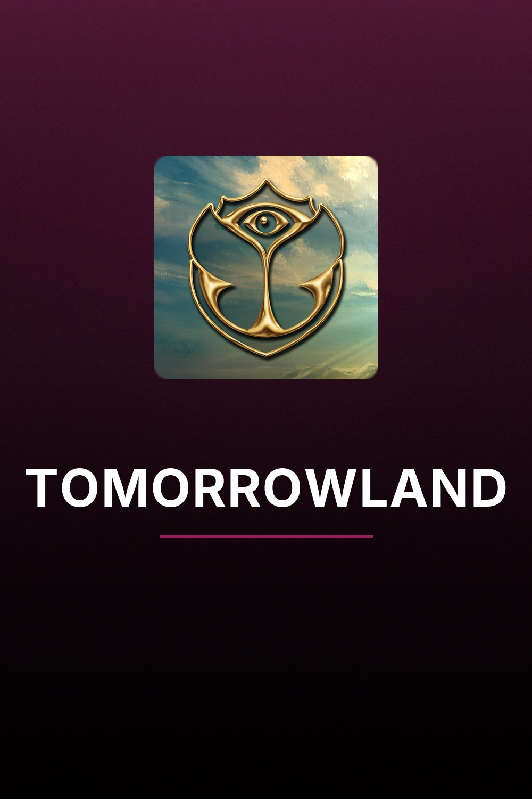
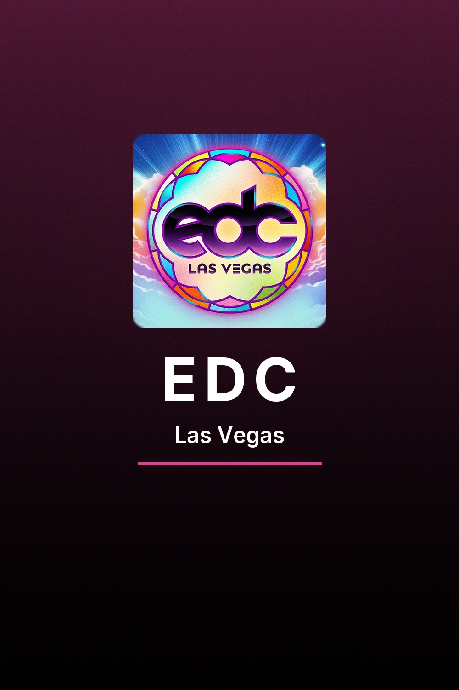
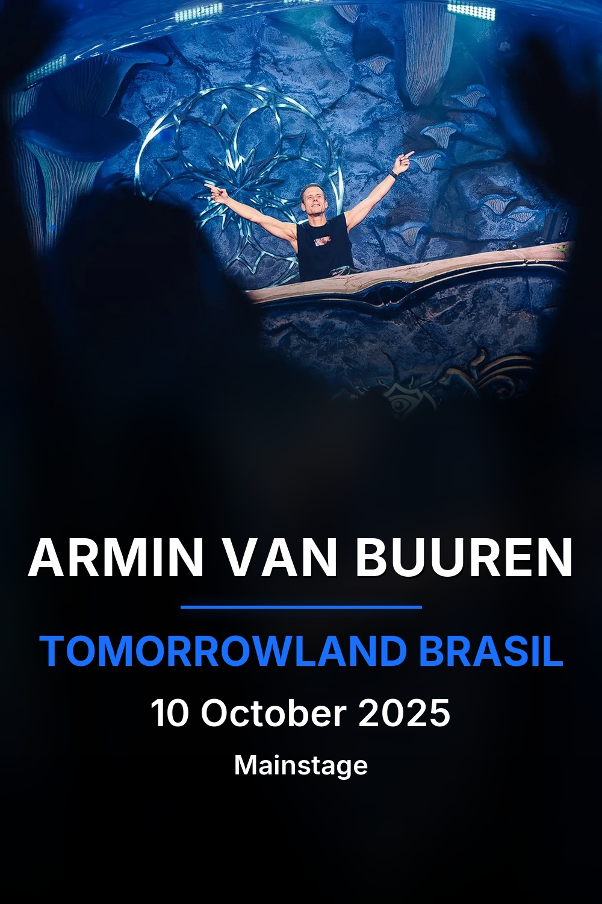
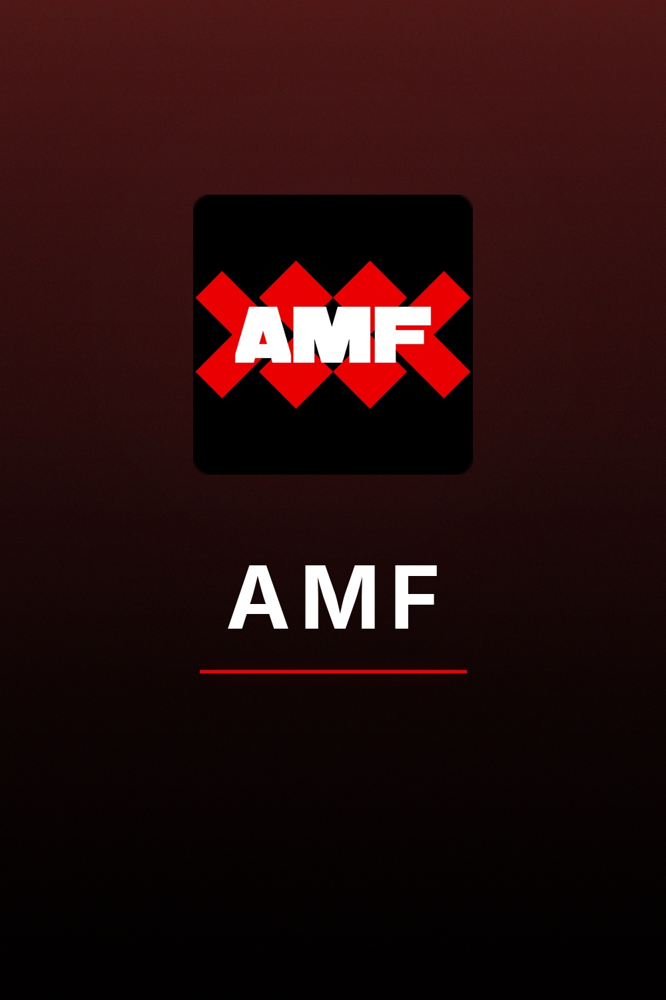

v0.9.0 · First Public Release
Festival set & concert library manager
Organize, enrich, and curate your collection with professional artwork, metadata, and chapter markers.



Match your recordings against 1001Tracklists. Embed tracklist metadata and chapter markers directly into MKV files for track-by-track navigation.
Four flexible folder layouts with smart filename templates. Sonarr-style collapsing tokens handle optional fields gracefully. Copy, move, or rename in place.
Generate professional posters, extract cover art, download HD artist images from fanart.tv, create Kodi-compatible NFO files, and embed MKV tags.
Auto-refresh your Kodi library via JSON-RPC after enrichment. Automatic path mapping for multi-storage setups. NFO files integrate seamlessly.
CrateDigger generates two poster styles: set posters using video frames with artist and event metadata, and album posters with festival branding and color-matched gradients.


Match recordings against 1001Tracklists. Embed metadata and chapter markers for track-by-track navigation.
cratedigger identify ~/downloads/sets/
Move or copy files into your library with smart folder layouts and filename templates.
cratedigger organize ~/downloads/sets/ --output ~/library/ --move
Generate artwork, posters, NFO files, download artist images, and embed tags.
cratedigger enrich ~/library/ --kodi-sync
pip install git+https://github.com/Rouzax/CrateDigger.gitOptional: install with vision support for advanced frame analysis
pip install "cratedigger[vision] @ git+https://github.com/Rouzax/CrateDigger.git"